Welcome to the Help Menu.
Please choose one of the following topics:
- 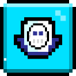 1. Introduction
- 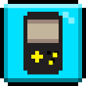 2. Player Skills
- 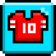 3. Squad
- 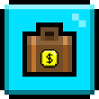4. Transfers
- 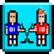 5. Match
- 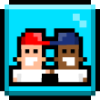 6. Friendly Match
- 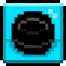 7. League Match
- 8. Alliance Cup Match
- 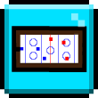 9. Formations
- 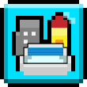10. Stadium
- 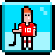 11. Training
- 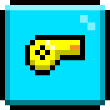 12. Coach
- 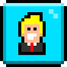 13. Staff
- 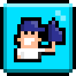 14. Fans
- 15. Finance
- 16. Alliance
- 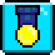 17. Task
- 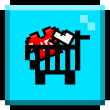 18. Store
- 19. Tips and Tricks
1. Introduction
Congratulations on signing the contract with our ice hockey club. As the new manager, you will get the opportunity to reach the stars with this team. For starters you have 6 players and our small arena at your disposal. You can acquire new players and start building up the arena and the facilities.
This is a game where you get to lead a virtual ice hockey team to glory, in competition with other participants from all over the world. It is a simple game and it's easy to grasp the basics. You can play it even if you just log in once or twice a week. The challenge is not to beat the game, the challenge lies within the competition with the other participants. While competing, many participants become friends, making this game also a social game.
You perform the duties of both manager and club owner. You plan your tactics, decide what to train and select which players to play. You buy and sell players, invest in arena improvements and much more. To be successful, a good piece of advice is to form a good strategy and a long-term plan. Success and glory will not come easily, after all.
When you take charge of your team it has just been placed as an expansion team in one of the two lowest divisions in the series system. To start your climb upwards you have a squad of players, some might be talented and some might not, a small arena and some money to your aid. Now it's time for you to show your magic. Don't worry about second thoughts when it comes to your club name. You can always change your club name anytime for only $10,000.
Good luck!
2. Player Skills
Player Position and Skills Needed
|
Position |
Short |
Skills |
|
Goalkeeper |
GK |
Keeper |
|
Defender |
DEF |
Defend |
|
Wing |
WNG |
Passing |
|
Center |
CTR |
Playmaking |
|
Forward |
FWD |
Attack |
|
Captain |
Capt |
All |
|
Penalty |
Pty |
Attack Passing |
3. Squad
Managing a ice hockey team is not only about training and tactics, it's about psychology as well. Your team has to want to win and they have to believe in themselves. Your team psychology affects your match results, and in return your match results also affect your team psychology.
Team spirit
How much your squad enjoys the atmosphere in the club is of great influence. The team spirit affects your playmakers' performance on the ice, and as a result of that how much puck possession they will get. The higher team spirit you have, the better your center will perform - which is reflected in the center sector rating. Team spirit itself can be affected by a lot of things, but in particular your coach's leadership, the team attitude you set for each match, transfers and psychologists.
Confidence
Your players have to believe in themselves to perform well, and a team with low confidence will have trouble putting their opportunities away. High confidence is normally a good thing, but if it gets too high, players may underestimate weaker teams. Team confidence is reflected in the attack sector ratings. Confidence is largely dependent on the results of previous games, but psychologists are also known to boost it.
4. Transfers
The Transfers list all the players that are available to be transferred to new teams. To acquire one of the players on the list, you will need to place a bid on the player. When the first bid is place on a player a 24 hour count down clock will start to count down until the bidding for that player will end. When the bidding time is finished, the player will be acquired by the team who had the highest bid at the time.
When placing a bid on a player that already has a bid, you will need to bid at least 10 thousand higher than the highest bid for the player.
One thing to keep in mind when biding is the age of the player, because remember every player will retire when they reach age 35, so if you win a bid for a player that is 28 years old, then he will only be able to complete 7 seasons for your team before retiring. (Note: all players will age one year at the end of each League season). Along these same lines, if you are really concerned about getting the most games possible from that 5 star player, it is better to acquire them at the beginning of a league season rather than at the end. It doesn't matter how many games a player plays in a season, at the end of the season, they will get one year older.
When finding your club's next stars, you may also want to notice that not only do the players have different skill levels, and transfer value (which is the start point for bidding), but they also have varying weekly salaries that you will have to pay them each week.
Your team can increase the number of transfer players that you will have available to your team by hiring more Scouts on to your staff.
Also in the Transfers area you can access the coaches that are available for hire. Coaches unlike players are just acquired if your club is willing to pay their listed value, and you do not need to go through any bidding process.
5. Match
Based on the player's skills, try to assign your players to positions where they will play their best and help the team. In addition, keep an eye on your players Fitness level as this will also effect the player performance in games.
In each half a number of attacks are made, and the center decides which team gets each attack. The team with the strongest centers is most likely to get the largest number of attacks. When a team gets an attack it is decided what kind of attack it is. There are three types of attacks: right wing, left wing, or center. The attacking team's attack for that sector will then try to break through the defending team's defense for that sector.
In each match a number of basic attacks are made. Some of these attacks are open, and can be taken by either team, and some are exclusive for one team only.
For open attacks, the center decides which team gets each attack. Exclusive attacks work in the same fashion, with one exception: If your center “win” one of your opponent’s exclusive attacks; you stop the attack – but you don’t get it yourself. You can’t get your opponent’s exclusive chances, and they can’t get yours.
Most of the basic attacks are reported in the match report. You may also gain additional attacks from "Special Events" and from counter-attacks.
The home team is helped by their fans. Ordinarily you have a larger percentage of possession at home than away. In a "cross-town rivalry" (when both teams are from the same region) the home team still receives the advantage, but the away team receives about half the advantage. If the game is played on neutral ground, neither team receives any advantage.
Team spirit, confidence and team attitude affect how well your team performs.
6. Friendly Match
To give all your players training in their right positions, friendly games are always a good option. Often it is used to let the reserves play and train, but it can also be a good way to test and train new formations and orders. Or why not challenge your best friend for a matter of honor. By challenging a club you also put money where your mouth is, in all challenges you can set the stake that ranges from $5,000 to $200,000.
The easiest way to get a friendly is to simply tap on a club in the match, league, map, chat or search page. You can also tap on Bluetooth for a direct one to one connection with another club manager. A menu will pop up from below and select view club info, and then tap on the map icon below. You can now see a red challenge button below the map location of that club, tap that button and a challenge dialog box will appear. Now you can enter a message to send to the other club you want to challenge. Try to write something provoking or funny so that they accept your challenge. On the terms below you can set the amount of money they will receive from you (green) if they win, or if they lose, how much they have to pay you (red).
Ticket sales from friendly match are used to boost up fan support and donated to fan clubs. All of your challenges, including teams who have challenged you, are shown on the match page. Once a friendly has been played, it will appear on the played match segment of the match page.
Friendly Matches are also required to open up new Training options.
7. League Match
A league season is 5 weeks long with 18 league rounds. In the 18 league rounds, the 10 teams in each series play each other twice; once at Home and once Away.
The league basic structure is organized into division and series. The highest division is Division 1 and it has only 1 Series. Division 2 has 5 Series, Division 3 has 25 Series, and Division 4 has 125 Series. Division 5 and above has 625 Series.
One of the main objectives of this game is to get your club promoted to the highest Division possible. If you are top 5 in your series you will advance directly to a higher division, but if you are bottom 5 you will be demoted to a lower division. The final standings are determined by, in order of importance, points, goal difference and goals scored. This in turn determines your ranking in the series. If all of these things are equal a coin toss decides.
If you are promoted to a higher division you get a promotion bonus of $100,000. If you finish first, second or third place you will get some prize money on top of the promotion bonus you already receive.
Promotion will also boost up your number of fans by 5%, similarly if you are demoted you will lose 5% of your fans.
8. Alliance Cup Match
It's a lot of prestige to win the cup, and for your fans the cup is just as important as the league. The cup is also a good opportunity to make some extra money. The big money is in the crowd revenue so just advancing a few rounds can be a real bargain if you play in a lower division.
The cup is always played midweek. Your opponent is announced one week in advance, for the next round your opponent is announced shortly after all matches for the current cup round has ended. All cup games not settled during normal time go to extra time, where they may be decided by a sudden death, first goal wins. If they are not decided then, they go to a penalty shoot-out.
In general, fans aren't very interested in the first couple of rounds of the cup, but their interest will increase as it goes on. It's also true that the fans of a lower division team will want to see a game against a higher division side, but that is not true the other way around.
The best teams in the cup also get some prize money.
9. Formations
As the manager for your club you decide how your team will play and which formation to use. Before each game you must set your decision, at least 5 minutes before the opening face off. For each game you select your starting six players and your substitutes. In the order form you choose which player goes where by taping on the position on the rink and selecting a player from the list.
If one of your players gets injured, the substitute for that position will enter the rink. If you don't have a substitute assigned to a certain position, or if the substitute is injured as well, one of the other substitutes will automatically get selected to play. If you don't have any able substitutes you'll have to continue the game with 5 players. If you're out of subs and your goalkeeper gets injured, another player will move to that spot. Remember that you must start your game with at least 6 players to avoid a walkover, which also means the effect of training for the whole week will be lost.
You can try playing with different formation to see how your team plays best.
10. Stadium
10. ArenaYour club will start off with a small arena, which you will have the opportunity to improve throughout your management career. On the arena page you can see and manage all details about your arena, and surrounding business opportunities.
In the match reports you're able to see how many seats were sold. The income from a game is divided in the following manner; the home team takes two-thirds of the income and away team gets one-third.
How many spectators visit your arena largely depends on your fan base total combined with your opponent's fans total amount.
11. Training
Training is the area where you can use Energy to do training drills that will increase your Club's XP and allow your team to Level Up. Every time you level up, you be rewarded with cash, fans, energy and diamonds! The amount rewarded in cash, and fans will increase with each level, so the higher your level, the greater your reward amount will be.
There are 3 different levels of training drills that will become available to your team; Rookie, Amateur, and Pro. When you first start with your team, only the Rookie level of drills are available. As your team gains more levels, the Amateur and Pro level of drills will also become available.
In all three levels, there are a number of drills that you can use your energy on. The drills will become progressively more efficient; meaning that you will gain more XP for less energy. The better drills will open up to your club as you master the previous drills, and if you team has played the required number of friendly matches.
12. Coach
It's time to decide which method of training the squad will focus on during the coming week. The players train together, so everyone will learn the same thing. One idea is to look for weak spots in your team, and try to improve them through training. You could also focus on your best young players and choose a training type that will make them even better, and build your future around them.
Every week you get to choose what kind of training you want your players to concentrate on in training sessions. The effects of the weekly training always appear on the beginning of the next following week. The training type selected when the update starts is the one that will be trained that week. You make your training selection in the Coach section.
Younger players are in general faster learners than older players, but how much your player will learn from training also depends on the skill levels he's at - the lower the skill level the faster the training. Training on very low skill levels is many times faster than on medium skill levels, and training on very high skill levels is slower than on medium skill levels.
If you have a good coach, training will be more effective than if you have a bad one. Assistant coaches also increase the effect of training.
When a player gets closer to the age of 30, he loses a little of his skills each week. How big the decrease is depends on how old the player is and the level of skill he is at. The higher level of skill the player is at, the bigger decrease. Older players also suffer from bigger decreases than younger ones.
Players at the higher skill levels may experience decreases even when they are younger, making further training on that particular skill less appealing. Note that the higher the skill, the faster the decrease
13. Staff
Your staff helps you manage and improve different things in your club. There are a wide variety of staff members available. You should hire as many staff as you can afford, but a good start could be at least one assistant coach.
You can read more about each staff purposes and contribution to the club on the staff list.
14. Fans
Both sponsor and fans control important sources of income. Therefore it is strongly advised to have a good relation with them and keep their mood up - it will pay off in the end.
The members of your fan club decide a lot when it comes to your team's finances. Fan amount decides a lot when it comes to your income from stadium ticket sales.
The easiest way to keep their mood up, and attract more fans, is to exceed their expectations. Fan increases every time you win a match. Fan decreases a bit when you loose a match.
As your team advances or drops in the league system, your fans will slowly get used to the new situation. If you just got promoted, fans will not expect much from you. But if you are staying put in the same division year after year, fans will have a tendency to hope for just a little more.
Sponsors prefer supporting a club sporting a good "image" to which they can be connected. The more successful your team is and the bigger your team's fan club is, the better image and the more sponsor money you'll get. Spokespersons help to improve the club's image.
15. Finance
You can view your financial report by taping on the Finance icon on the main screen. The financial report tracks revenue and expenses during the week, and also gives you a prognosis for your weekly result. Each weekend the finances are updated and a new report is created. Keep an eye on your reports and make sure not to get in too much debt or the team could go bankrupt.
If in the case that you do go bankrupt, you could try to sell your players or reset your club.
16. Alliance
Alliances give your team another opportunity to compete in big tournaments, and to gain experience, revenue, and possibly fame. Each Alliance has its own tournament that is open to the member teams of that Alliance. The Alliance tournaments are run similar to the Cup tournament in that it is single elimination and will run over a number of rounds depending on how many teams are in the Alliance. All member teams of an Alliance are automatically entered into the Alliance tournaments, and a new tournament should start a week or two after the previous one has finished.
Each Alliance can have a different feel. Some Alliances will be large with a 100 or more teams and large prizes, and others maybe very small with only 20 teams and a smaller prize. Some Alliances can be joined by any team, and other Alliances may have stricter requirements for joining (for example: teams need to be above or below a certain level or have a stadium of a certain level). The characteristics of the Alliance can be determined by the President of the Alliance, and hopefully listed on the Alliance information page.
Once your team has joined an Alliance, you can make it better by donating money that can be used for the tournament prizes or donating diamonds to help the Alliance climb to higher levels.
If have some extra cash, you may even want to create your own new Alliance. As president of the new Alliance you would have the freedom to determine what would be the characteristics of your Alliance. To help shape your new Alliance you could set out the requirements for joining the Alliance on the Alliance information page, and you will also have the power to accept or reject the applicant teams.
Once again, joining an Alliance is a great way to get more games, experience for your players, revenue, and possibly a trophy or two.
17. Task
There are many actions or accomplishments in the game that once you complete them will qualify you for an Achievement. Once you have earned an Achievement you can look in the Achievements section and you will see a claim button for the Achievement. When you click on the claim button, you will be given a cash reward, and will have a record of accomplishing the Achievement.
Using the Achievements is a great way to get your team started with the rewards that you get back from the Achievements. This way you can try out various actions of managing your team, and be rewarded. For example, when you hire a staff member, most of the positions will have an Achievement that will return some or all of the cost for hiring the staff member. So make sure you are looking at the many Achievements that are available to you as a manager.
18. Store
The store is where you can customize your club through various purchases using game Funds. Purchases include Home and Away jerseys for you team, or replacement Logos for your club that are more representative of your team's fierceness and pride.
From the store section, you can also transfer over the areas for acquiring coaches or players.
19. Tips and Tricks
1) It will take some time to build a good team but you will get there soon.
2) You will earn money and diamonds by leveling up, so do as much training as you can with your energy.
3) Complete as many Achievements as you can early on to claim cash rewards for your club.
4) You also earn lots of money through ticket sales in your stadium, so try to gradually increase your Fans and upgrade your stadium when you get the chance.
5) Accept as many challenges from higher level clubs as you can, because you will gain XP for this and this leads to faster leveling up too.
6) When you have enough money start bidding for good players. Once you get good players on your team, you will easily win more games and earn money from challenges, league and cup matches. It's really cool to have good players, other clubs will envy you for this.
7) Don't forget to join an Alliance created by other players. They host their own cups with prizes up into the millions!
The possibilities are endless in this game, and there are many strategies you can play and try what is best for you. You can discuss strategy with other players through the chat. If you do enjoy the game and would like to progress faster, then just spend a bit on energy refills or any other in-app purchases you like.